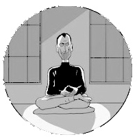

Steven Paul Jobs (/dʒɒbz/; February 24, 1955 – October 5, 2011) was an American entrepreneur, business magnate, inventor, and industrial designer. He was the chairman, chief executive officer (CEO), and co-founder of Apple Inc.; CEO and majority shareholder of Pixar; a member of The Walt Disney Company's board of directors following its acquisition of Pixar; and the founder, chairman, and CEO of NeXT. Jobs and Apple co-founder Steve Wozniak are widely recognized as pioneers of the microcomputer revolution of the 1970s and 1980s.
He was born in San Francisco to parents who had to put him up for adoption at birth; he was raised in the San Francisco Bay Area during the 1960s. Jobs then attended Reed College in 1972 before dropping out, and traveled through India in 1974 seeking enlightenment and studying Zen Buddhism. Jobs's declassified FBI report stated that an acquaintance knew that Jobs had used marijuana and LSD while he was in college. Jobs once told a reporter that taking LSD was "one of the two or three most important things" he did in his life.
Jobs and Wozniak co-founded Apple in 1976 to sell Wozniak's Apple I personal computer. The visionaries gained fame and wealth a year later for the Apple II, one of the first highly successful mass-produced personal computers. In 1979, after a tour of PARC, Jobs saw the commercial potential of the Xerox Alto, which was mouse-driven and had a graphical user interface (GUI). This led to development of the unsuccessful Apple Lisa in 1983, followed by the breakthrough Macintosh in 1984. In addition to being the first mass-produced computer with a GUI, the Macintosh introduced the sudden rise of the desktop publishing industry in 1985 with the addition of the Apple LaserWriter, the first laser printer to feature vector graphics. Following a long power struggle, Jobs was forced out of Apple in 1985.